今日判断
今天最值得先推进的是 BlastBoss、SilkiPro Straight、Ninja Crispi Pro。这三条线都能拆成功能卖点再回到 OEM。
供应链优先级
优先验证轻量清洁工具、湿发直发一体美发器、玻璃容器型厨房电器系统，不先追高复杂整机。
推荐动作
不要急着找同款。先拆结构、附件、配色、套装和使用场景，再找能做日本市场差异化的小批量工厂。
产品机会卡片
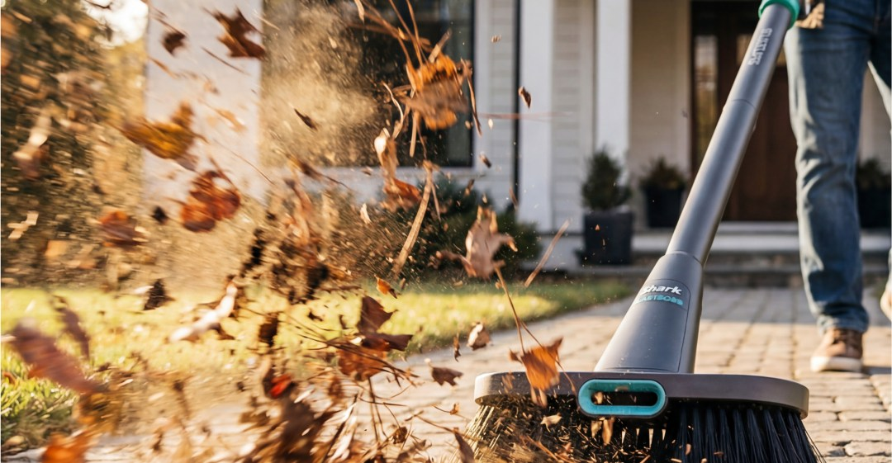
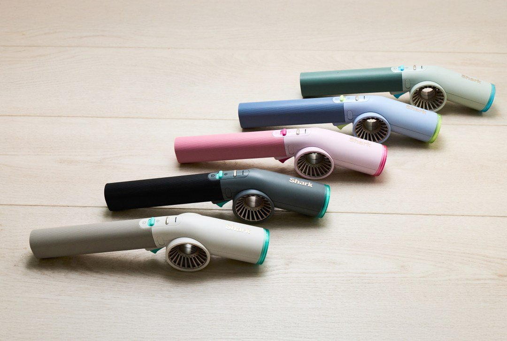
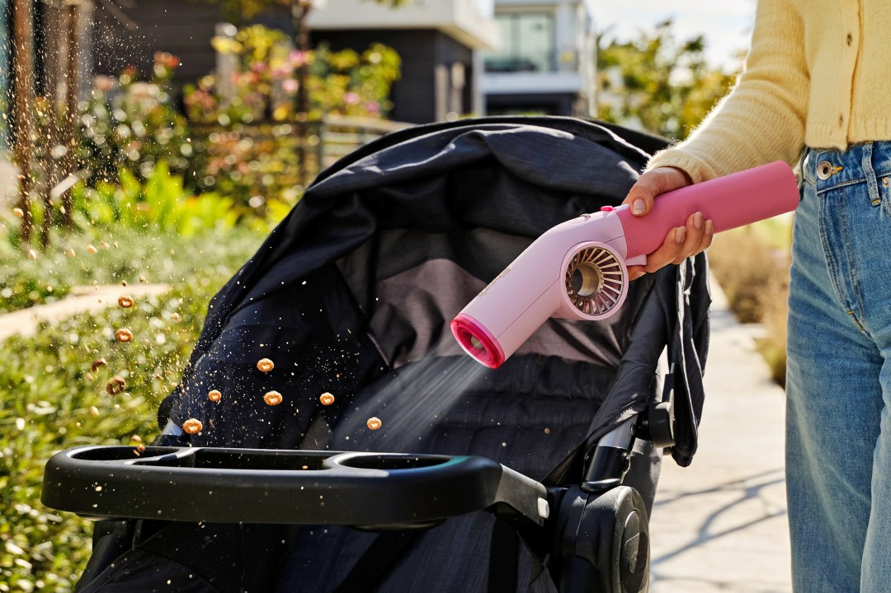

图片来源：The Verge / Tom's Guide。用于展示主机外观、碎屑清洁场景与三种附件组合。
Shark BlastBoss 室内外一体空气清扫器
查看原页面
家居清洁
户外工具
OEM 可改良
日本适配
核心卖点
190mph 可调气流。室内碎屑、窗轨灰尘、车内缝隙、庭院轻清扫一机覆盖。
适合客户
日本电商卖家、家居杂货客户、户外园艺客户、小家电 OEM 客户。
日本市场适配
比传统吹叶机更适合阳台、玄关、车内、小庭院等高频小空间场景。
可信度
高。官方页、媒体页、附件图与价格信息一致，公开可验证程度高。
供应链判断
值得联系工厂。更适合拆成低噪版、桌面版、宠物浮毛版、车载版与附件组合版，而不是只追同外观。
风险点 + 产品级下一步建议
低价仿款会快速同质化，噪声和续航也容易翻车。优先找无刷电机和风道成熟工厂，先做三套样机：桌面清灰、车载清缝、庭院轻清扫。
当前阶段：值得联系工厂。它本质上是“高频碎片清洁工具”，不是普通园艺吹叶机，适合短视频转化和 OEM 配件升级。
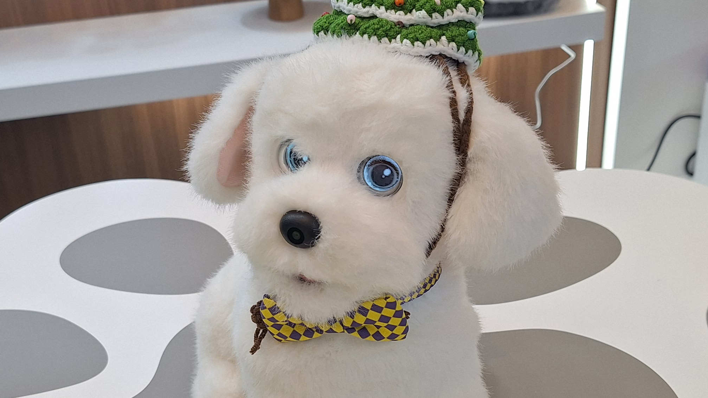

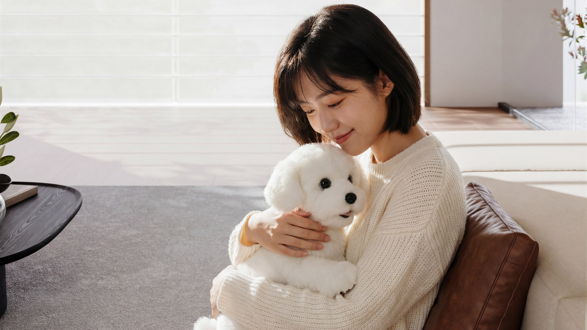
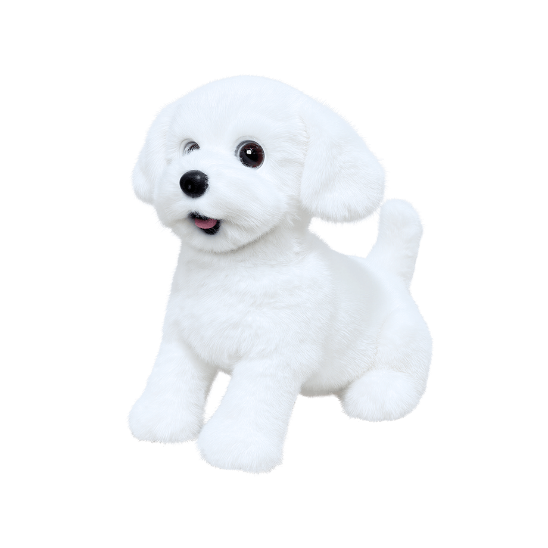
图片来源：TechRadar / Tom's Guide / ECOVACS。用于展示正面表情、配饰玩法、家居场景与官方细节。
宠物用品
AI 玩具
高话题
暂不追整机
核心卖点
模拟宠物行为，能识别主人、响应触摸，外形和配饰天然适合内容传播。
适合客户
宠物用品客户、礼品客户、情绪陪伴赛道客户、IP 联名客户。
日本市场适配
独居、高龄、租房不能养宠等场景都能讲通，但购买决策更依赖情绪价值而非硬件参数。
可信度
中高。多家 CES 公开媒体可验证，但完整零售页、价格体系与量产节奏仍不充分。
供应链判断
不建议今天直接找整机仿制。更适合延展成 AI 毛绒陪伴玩具、桌宠、服饰配件、收纳窝和互动周边。
风险点 + 产品级下一步建议
情绪陪伴类产品容易首波火、后续疲软。先观察日本市场内容反馈，再找智能玩具工厂验证日语语音、触摸反馈和低成本动作方案。
当前阶段：只是市场热度。趋势有价值，但更适合作为“陪伴型玩具与周边”的方向雷达，而不是今天就追高复杂整机。
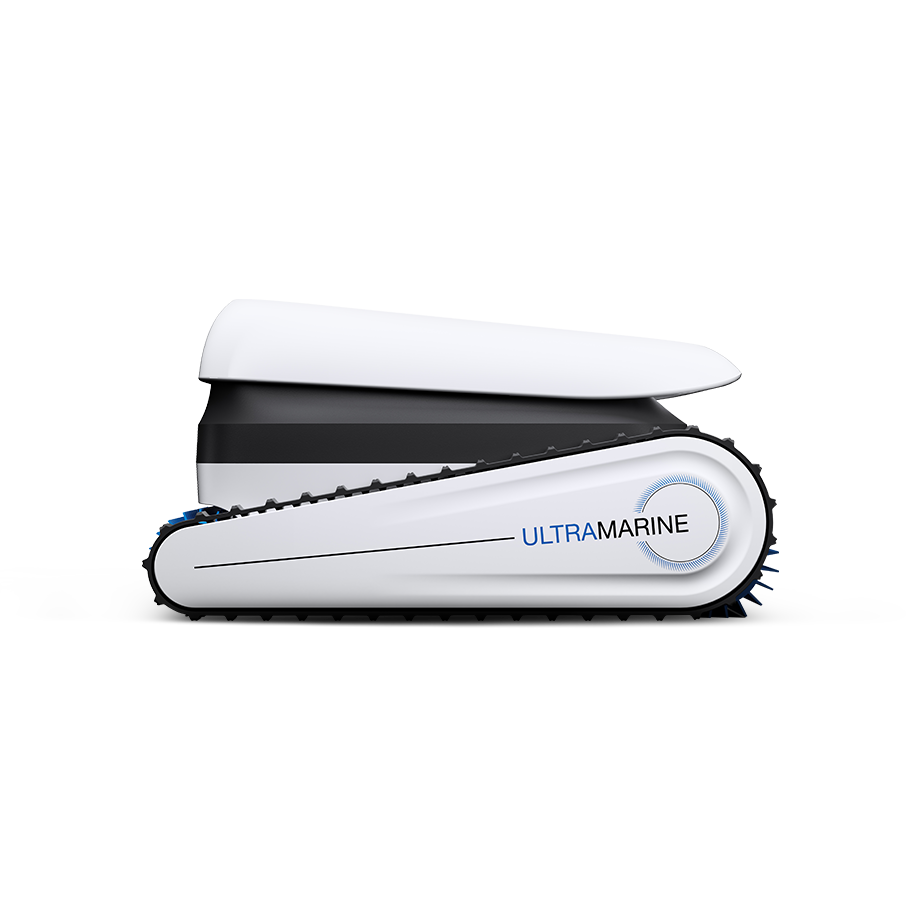
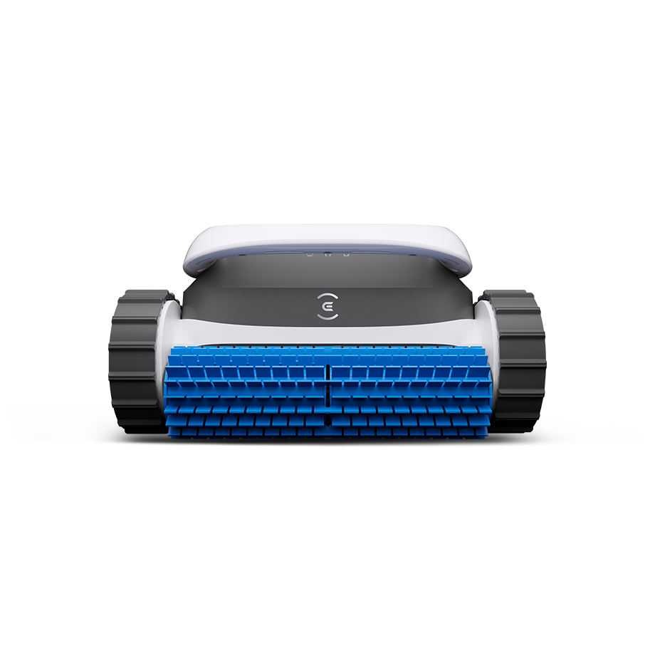
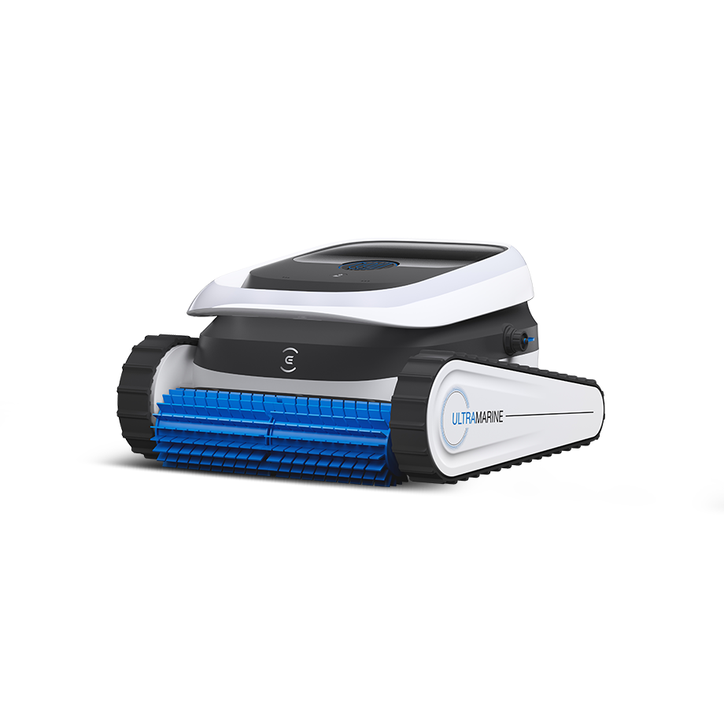
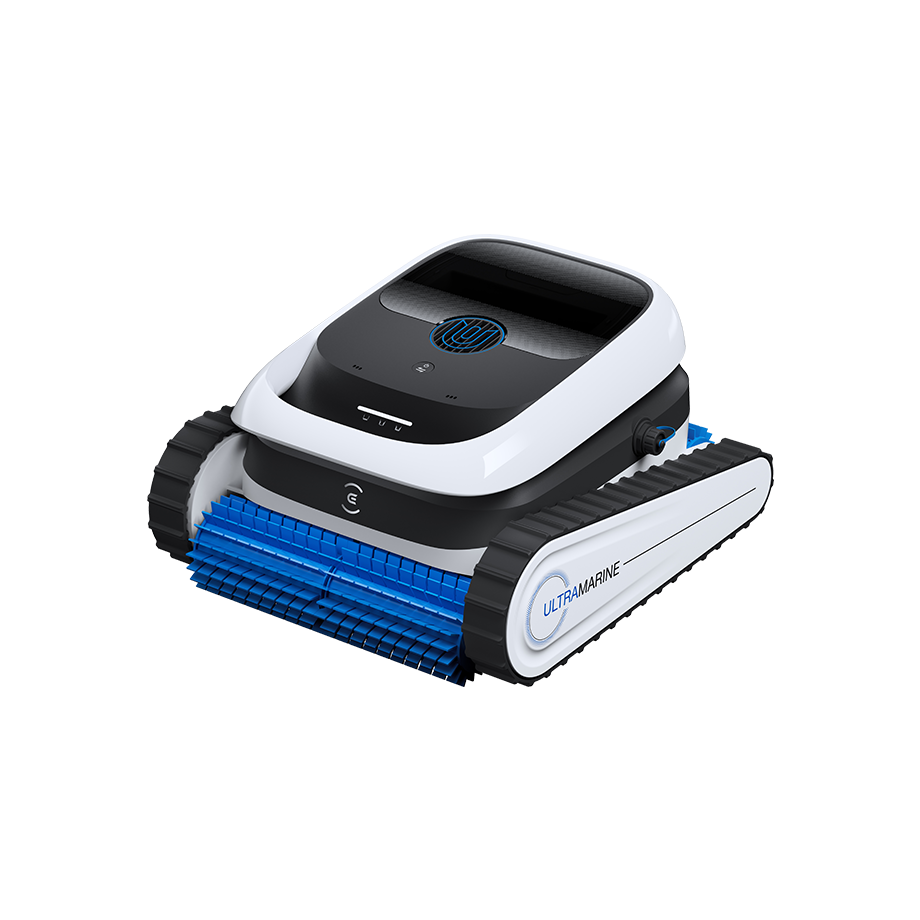
图片来源：ECOVACS 官方产品页。用于展示机身外观、滚刷结构、侧面履带与整体比例。
ECOVACS Ultramarine P1 泳池清洁机器人
查看原页面
户外用品
高客单
自动化维护
偏项目制
核心卖点
4800GPH 吸力，地面、墙面、斜坡一体清洁，走“高维护成本场景自动化”路线。
适合客户
户外园艺客户、别墅渠道、跨境高客单卖家、海外物业用品客户。
日本市场适配
日本本地泳池不算大众盘，更适合作为海外市场项目线索或高端物业渠道机会。
可信度
中高。公开媒体对功能、售价和区域上市描述较一致，公开可验证程度高。
供应链判断
可进入供应链验证，但优先看滤网耗材、收纳车、维护工具包、防晒罩、防缠绕升级件，不先碰低价整机替代。
风险点 + 产品级下一步建议
售后、防水、电池和耐腐蚀要求高。先找泳池维护类工厂和配件厂，验证耗材与配套包，再决定是否往整机项目推进。
当前阶段：可进入供应链验证。它不是泛大众日销品，而是面向高客单物业、庭院、度假渠道的项目制机会。
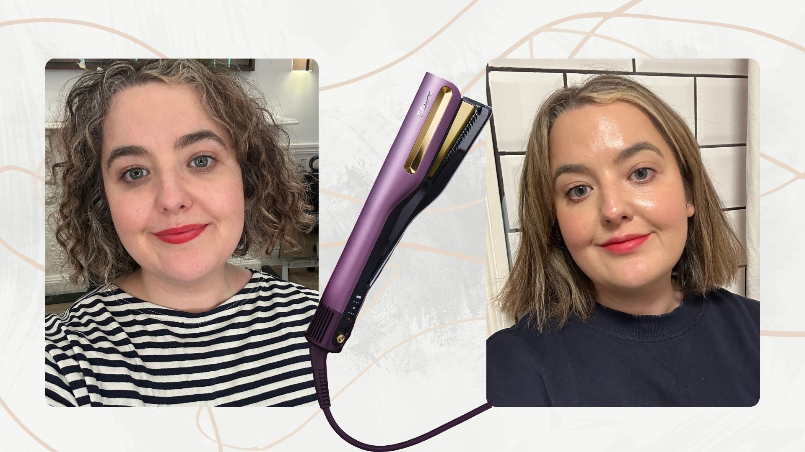
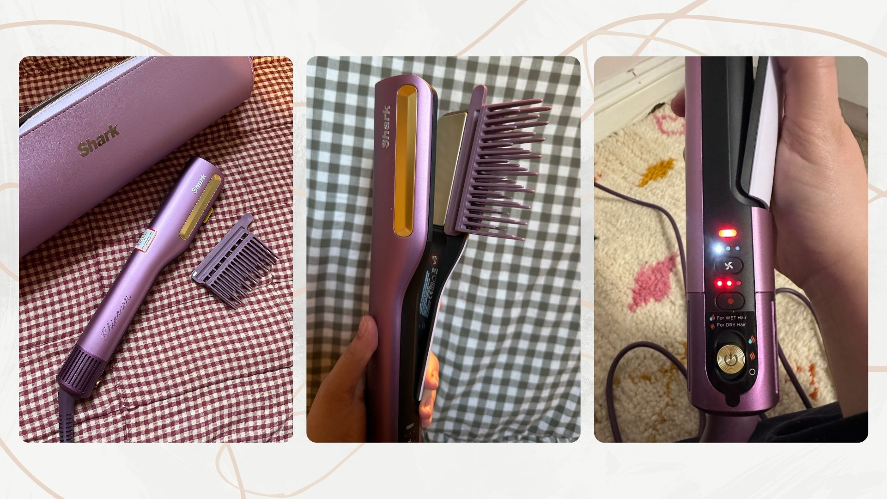
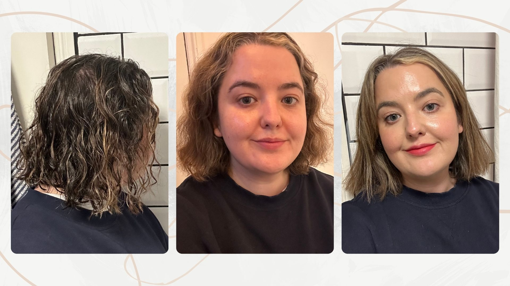
图片来源：TechRadar / Woman & Home 评测实拍。用于展示主机外观、梳齿附件、操作面板与使用前后效果。
Shark SilkiPro Straight 湿发直发一体造型器
查看原页面
美容个护
美发电器
高溢价
日本适配
核心卖点
湿发到干发再到顺直一步完成，附带梳齿件，更照顾卷发、粗硬发、毛躁发场景。
适合客户
美容个护客户、日本电商卖家、小家电客户、OEM 美发工具客户。
日本市场适配
“减少步骤、减少热损伤、提升光泽感”是日本高客单美发工具的长期有效卖点。
可信度
高。多个公开评测已给出价格、附件、操作体验和发质适配反馈。
供应链判断
值得联系工厂。可以拆成风道、陶瓷板、梳齿附件、温控感应、收纳包、旅行版和亚洲发质版。
风险点 + 产品级下一步建议
只做普通直发夹仿款没有意义。先找成熟美发电器厂验证重量、噪声、夹发拉扯、安全温控和卷发友好型附件。
当前阶段：值得联系工厂。它更像“高客单功能升级型美发工具”，适合走参数差异、附件差异和内容种草路线。
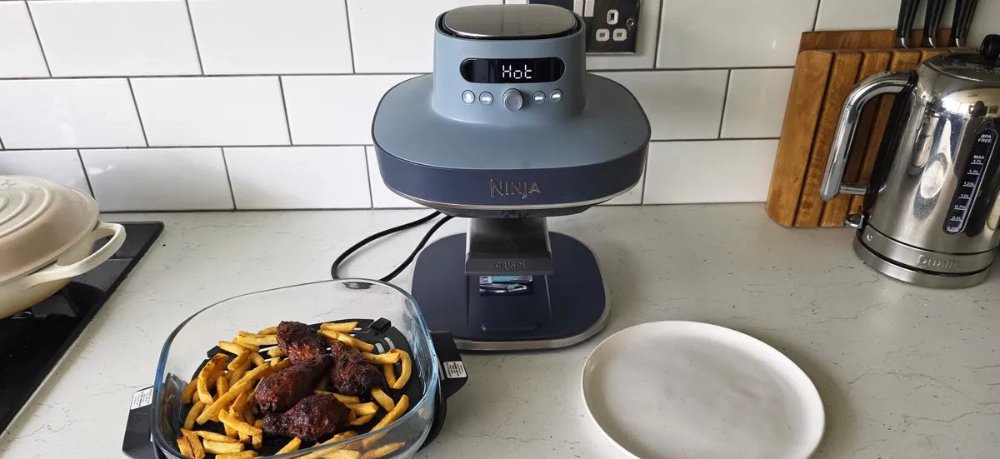
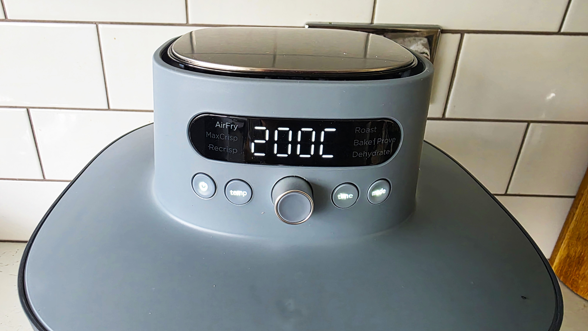
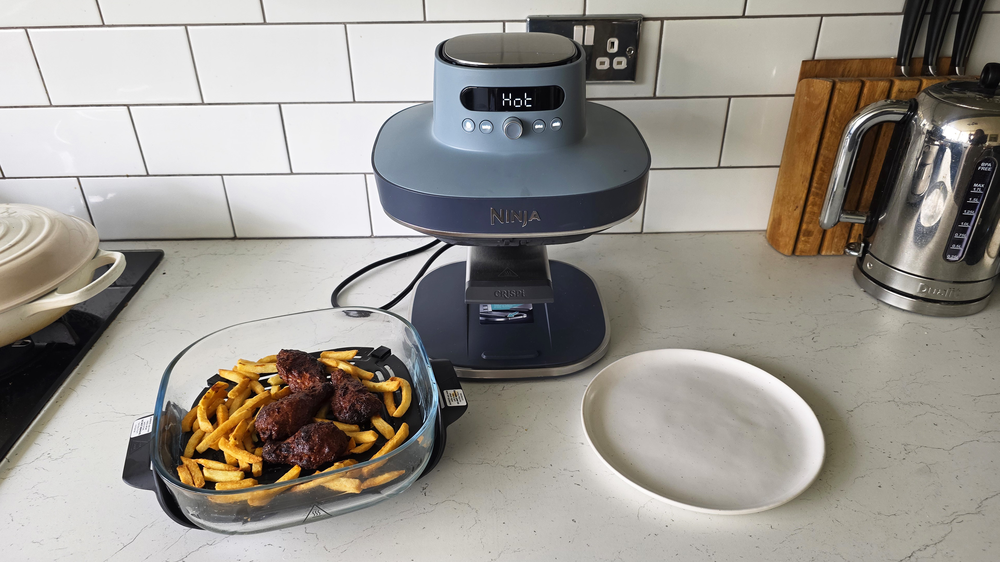
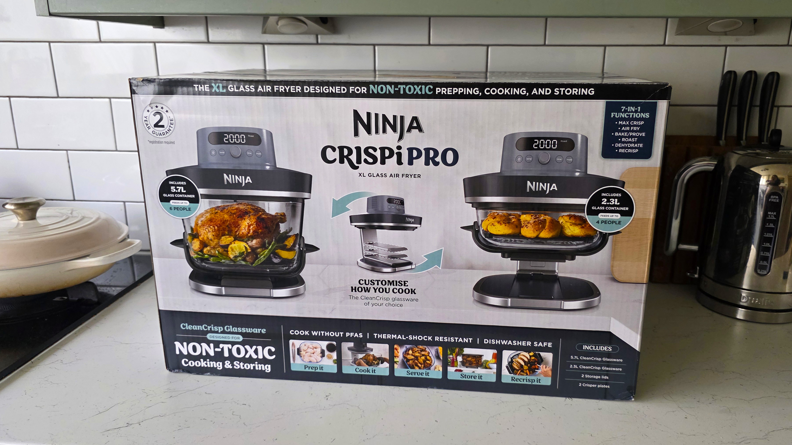
图片来源：Tom's Guide 评测实拍。用于展示主机本体、玻璃容器、料理成品与包装形态。
Ninja Crispi Pro 玻璃容器式空气炸系统
查看原页面
厨房用品
小家电
套装机会
家居杂货延展
核心卖点
玻璃容器可备餐、可冷藏、可上桌、可空气炸，把小家电卖成“料理容器系统”。
适合客户
日本电商卖家、家居杂货客户、厨房用品客户、小家电客户。
日本市场适配
可视化烹饪、桌面美观、少量分餐和收纳效率都更适合日本家庭叙事。
可信度
高。容量、模式、颜色、使用场景、价格都有多家公开媒体佐证。
供应链判断
值得联系工厂。整机之外，还能拆玻璃烤盒、密封盖、底托、分隔器、硅胶件和食谱套装。
风险点 + 产品级下一步建议
玻璃耐热、跌落破损、密封和加热效率都会直接影响口碑。先做 1-2 人份、可叠放、低占位版本，再看整机机会。
当前阶段：值得联系工厂。厨房电器正在从“单功能机器”转向“备餐容器系统”，这条线同时能打电器客户和家居杂货客户。